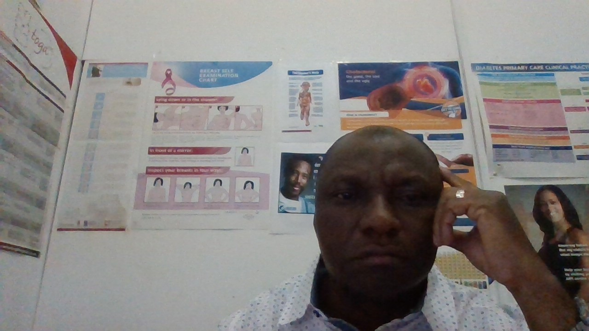

About Me
Dr Ebong Akpabio is a Namibian‑based Nigerian physician and independent consultant in health and development with more than 25 years’ experience designing, managing and evaluating public‑health and social‑service programmes. A former Chief Medical Officer for Namibia’s Kunene Region, he now leads high‑impact monitoring‑and‑evaluation assignments for multilateral partners while running a private Health & Wellness Clinic in Ondangwa. Passionate about capacity‑building and data‑driven solutions, he helps organisations harness technology—now including generative AI—to strengthen health systems and improve community outcomes.
About the Course
This hands‑on 8‑week bootcamp shows busy professionals and researchers how to deploy generative‑AI tools immediately—no code required—to save time, boost quality and unlock new solutions. You’ll learn to:
- Create polished websites, documents and presentations with AI assistance
- Run literature reviews, analyse data and build dashboards in minutes
- Design custom chatbots that answer domain‑specific questions 24/7
- Set up automated workflows that keep projects moving round‑the‑clock
- Generate and edit images, videos and design assets on demand
- Apply AI strategically in real‑world research, creative and business scenarios
By the end you’ll be shipping higher‑quality work faster—and with less routine grind.
My Weekly Submissions
Links will appear here as each assignment is completed: